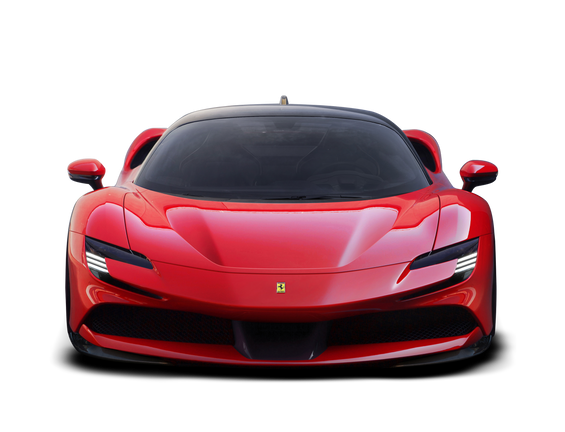
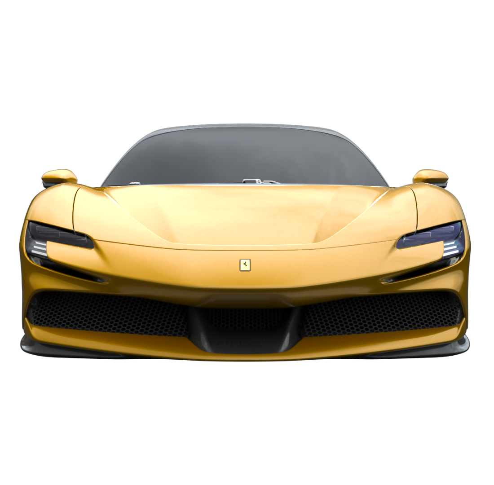
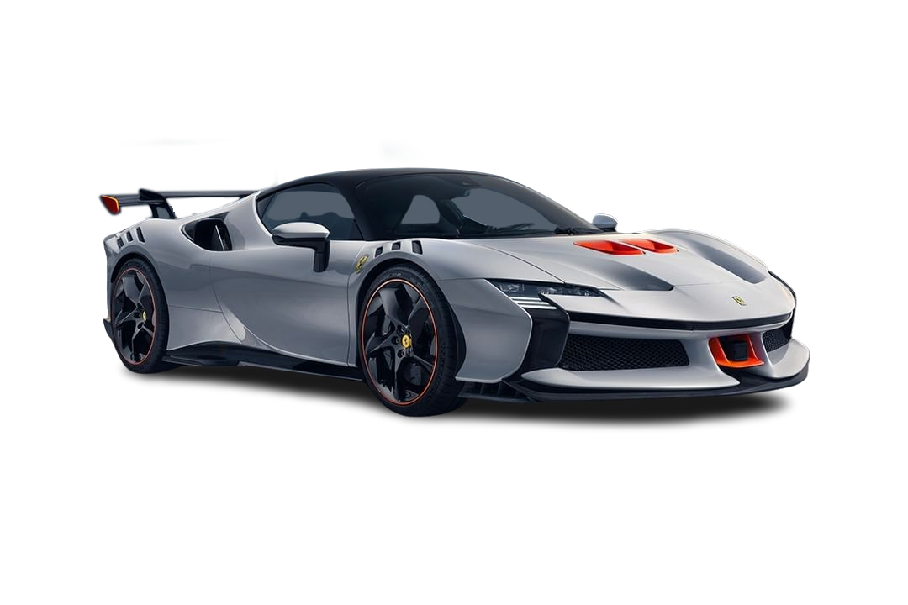
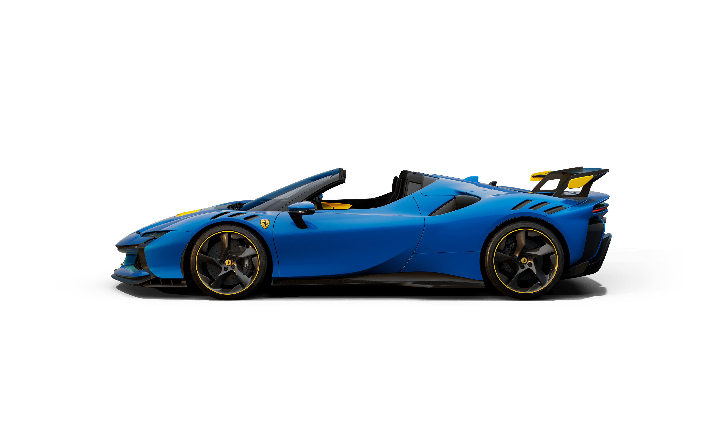

Mahakarya Hibrida Terbaik dari Maranello Memadukan warisan balap Formula 1 dengan teknologi hibrida masa depan, seri Ferrari SF90 hadir sebagai redefinisi performa supercar. Jelajahi empat varian eksklusif—mulai dari kemewahan coupe jalan raya hingga kebuasan monster sirkuit edisi terbatas.
Ikon Supercar Hibrida Modern SF90 Stradale adalah standar baru performa supercar. Dibekali mesin V8 turbocharged yang dipadukan dengan tiga motor listrik, mobil beratap coupe ini menghasilkan tenaga fantastis hingga 1.000 CV. Desain aerodinamisnya yang elegan dan tertutup rapat memberikan kestabilan maksimal saat meluncur di kecepatan tinggi.

Sensasi Performa Tinggi Tanpa Batas Menggabungkan kebuasan performa SF90 dengan kebebasan berkendara atap terbuka. SF90 Spider dilengkapi fitur Retractable Hard Top (RHT) khas Ferrari yang bisa dibuka dalam hitungan detik. Tanpa mengorbankan aerodinamika, Spider memberikan raungan suara mesin V8 yang langsung memanjakan telinga pengemudi.

Monster Sirkuit Berlisensi Jalan Raya Hadir dari program balap eksklusif XX Programme, edisi terbatas ini dibuat untuk kamu yang menginginkan performa balap radikal. SF90 XX Stradale adalah mobil jalan raya pertama Ferrari yang dibekali spoiler belakang tetap (fixed rear wing) untuk daya tekan (downforce) luar biasa. Lebih ringan, lebih galak, dan makin presisi di setiap tikungan.

Puncak Kombinasi Balap dan Kebebasan Menggabungkan ketajaman aerodinamika seri XX dengan eksklusivitas atap terbuka. SF90 XX Spider adalah mahakarya langka yang menawarkan impresi balap sirkuit sekaligus gaya berkendara convertible. Dibuat dalam jumlah yang sangat terbatas, menjadikannya salah satu koleksi paling berharga bagi pecinta kecepatan.
